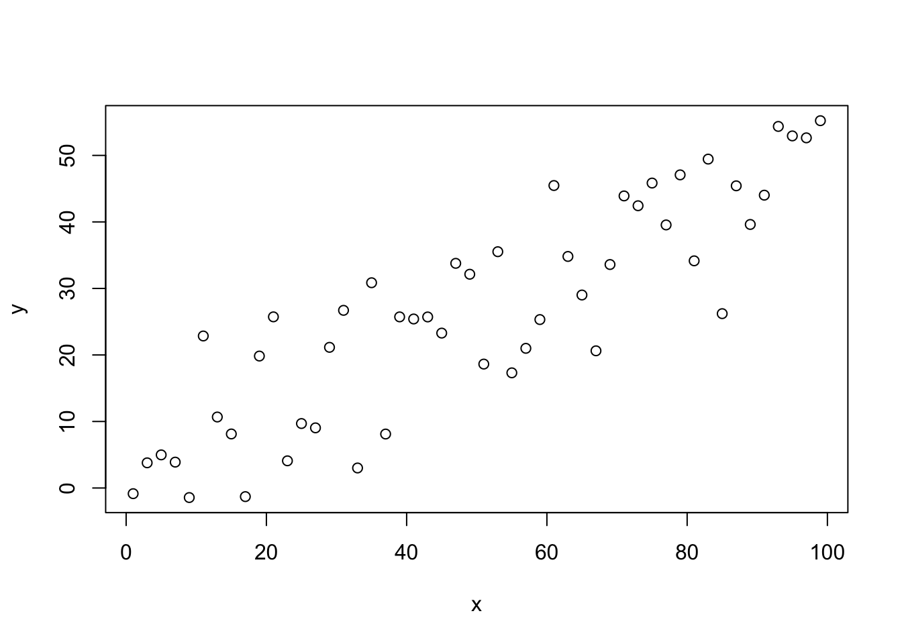

Suggested Reading:
Grolemund, G. 2014. Introduction to R Markdown. RStudio. http://rmarkdown.rstudio.com/articles_intro.html
Our course website is a set of R markdown files that have been rendered to html files and are hosted on GitHub Pages. You can find all of the pages that comprise this website in this GitHub repository, and a similar one for our course website specifically (https://github.com/elahi/xxx, where xxx is specific to our course). The main landing page is found in the file index.html which has been generated from the file index.Rmd.
You will learn a bit of Rmarkdown, so that you can create a fully reproducible document as part of (some of) your lab assignments. Basically, this means integrating data analysis within a readable text document, like so:
set.seed(121)
x <- seq(1, 100, by = 2)
m <- 0.5
b <- 1.2
z <- m * x + b
y <- z + rnorm(50, mean = 0, sd = 10)
plot(y ~ x)
I am requiring you to interact with the course material in this way because being able to document reproducible analyses is a valuable skill that is becoming nearly required for today’s scientists. As analyses become more complex and specialized, code review, in addition to open access to data, is likely to become a regular aspect of formal and informal scientific review. Documenting your analyses in R markdown with RStudio is a (relatively) painless way to ensure that you (and your reviewers) understand how you obtained and analyzed your data even after months of putting a project “on the back burner”. Therefore, we hope that you will find this additional class requirement useful even as it introduces a bit more cognitive burden.
Go to the course website GitHub repository. Notice that you can choose to download all of the files as a zip file by clicking the green “Clone or download” button in the upper right. You will only need to edit one (or a few) pages, so let’s just download one file rather than the whole website. Click on the R markdown file corresponding to this html webpage: https://github.com/elahi/elahi.github.io/blob/master/01-B-Rmarkdown-intro.Rmd, then click the ‘Raw’ button that appears at the top right corner of the document viewer on the page that loads. This will take you to a page that displays the text in the file. Download the page as a .Rmd file (remove the .txt extension that your browser will attempt to append) and save it somewhere useful on your computer (e.g. the folder you have made for this class, not Downloads or Desktop). Find the file on your computer and open it. It should open in RStudio.
Exercise:
Compare the contents of the .Rmd file to what you see on the website: https://elahi.github.io/01-B-Rmarkdown-intro.html
- What is the same?
- What is different?
R markdown files have three main pieces:
Exercise:
Find each of these three pieces in the .Rmd file for this webpage.
Check out the following resources for generating your own markdown documents from scratch and want to learn more about how to change the format of the output document:
Markdown is a basic and readable way to format text that is used by many web platforms because it enables to easily make web-based content without writing html. Most importantly- it is a way to encode formatting directly into the text, which can then be interpretted into multiple different document formats. Markdown keeps documents text-based so that files are readable by both humans and machines.
Here’s a quick lesson on markdown from GitHub.
Exercise: Look at the Introduction to R lesson .Rmd file and find examples of the following formatting:
- a header (what controls the size of the header?)
- bold text and italic text
- a list
- a numbered list
- text that links to a webpage
- text formatted as code that is not evaluated (verbatim code)
R markdown also allows you to type latex-style mathematical formulas using $ $ for inline text and $$ $$ for for equations centered on their own lines. For example: $$ E(X) = \sum_{i=1}^N x_i*p(x_i)$$ would display as: \[ E(X) = \sum_{i=1}^N x_i*p(x_i)\]
Code chunks perform the analysis. Code chunks begin with ```{} and end with ```. Any text inside the {} at the beginning of the chunk tells R how to evaluate and display the results of the code. Since we will be using R to evaluate our code, all of our code chunks will begin with: ```{r}. You can name code chunks (to keep track of parts of an analysis) by typing a word after the r: ```{r chunk-name} Any text that you place between the beginning and ending tags of a code chunk will be treated as plain R code. Code chunks are evaluated sequentially, so any objects that you create in a chunk will be available to the chunks that follow it.
You can also evaluate R code within a paragraph of text (e.g. inline code). For example, suppose you know that you weigh 142 lbs, but want to report it in kg. If you had done the calculation in a code chunk:
my_lbs <- 142
my_kg <- my_lbs * 0.45359237You could write: I weigh `r my_kg` kg. Which would display: I weigh 64.4101165 kg. Or, for better formatting: I weigh `r round(my_kg, 1)` kg. (Displays: I weigh 64.4 kg.) If you hadn’t done the calculation in a code chunk you can also do calculation in the line: I weigh `r round(142*0.453, 1)` kg.
You can treat R markdown files (almost) just like a regular R script. Any text that you highlight or line that you place your cursor on can be run by pressing Ctr+Enter or Cmd+Enter. You can also run an entire code chunk by pressing the green arrow that appears to the right of it.
If you click the ‘Run’ button at the top of the document you can choose to run all code chunks in the document (or just those above or below your cursor).
Exercise:
Run a line of code in your Rmd file. What happens in the Console window? What happens in the Environment window?
Now try running a line of text from this document. What happens?
What happens when you use the ‘Run’ button to run all code chunks in the document?
When you are finished with an analysis (or even if you are only part-way through) you can convert your Rmd file to another file format to generate a report. This process is called rendering and we will be rendering all of our Rmd files to html so that they can display as webpages on our course website. For your project, you may want to render your analysis to a slide show (beamer) or pdf or word document.
Documents written in R markdown are rendered to other document formats by the rmarkdown package that comes automatically installed with RStudio. The rmarkdown package renders documents using two steps: First, it excutes all of the code using functions from the knitr package. Then, it converts the output of the code and any markdown-formatted text to a new document format using functions in the pandoc package. Note that any output that you generate in the code chunks (e.g. plots, exported data) will be saved relative to the working directory, unless you specify otherwise in a code chunk option.
To render an Rmd document in Rstudio, click the ‘Knit’ button at the top of the window displaying the document. If everything goes right a new window should pop up showing the new file that was generated (or prompt you to open the file in a browser window). The file will be saved in the directory where the Rmd file is located.
Exercise:
- Render your practice Rmd file to an html file in RStudio by clicking the Knit button.
- Use your file browser to locate the html file that was generated. Open it with your browser- what do you see? How does it differ from what is displayed on this website?
- Now open the html file with a text editor (emacs, notepad). What do you see?
The way that pandoc displays the contents and output of code chunks is determined by the options that you set. These can be set for all code chunks in the document (global options) or for each chunk individually.
This reference guide has a good overview of what the different options will do.
Look at the first code chunk in the example lesson Rmd document where the global options are set. This code block demonstrates 3 global options that apply to all following code chunks in the document: knitr::opts_chunk$set(). It also shows how you would apply an options to a single code chunk in the brackets at the start of the chunk: {r include = FALSE}, so that this chunk is not shown in the resulting html document, even though it is evaluated.
Exercise:
What other chunk options do you see in the example lesson Rmd file? What do they do? (Hint: You can figure it out by removing them and rendering the document.)
Any figure that you make in a code chunk will by default be saved as separate files in your working directory and then imported into the final document created by pandoc. For these webpages, the first code chunk specifies: knitr::opts_chunk$set(fig.path = "images/"), which tells knitr that it should save any figures generated with code chunks to a folder named “images” within the working directory. The image files will be named according to the name of the code chunk from which they are generated. Hence, it is a good idea to separate analyses into separate code chunks and give them somewhat descriptive names. R markdown can also automatically number and caption your figures and tables. The captioner package is particularly useful for this.
Exercise:
- Add a new section to the example lesson Rmd document with markdown-formatted text and a new R code chunk. Render the document again.
- Open the html file with your web browser to see what your changes would look like online. How does what you see differ from what is shown on this website?